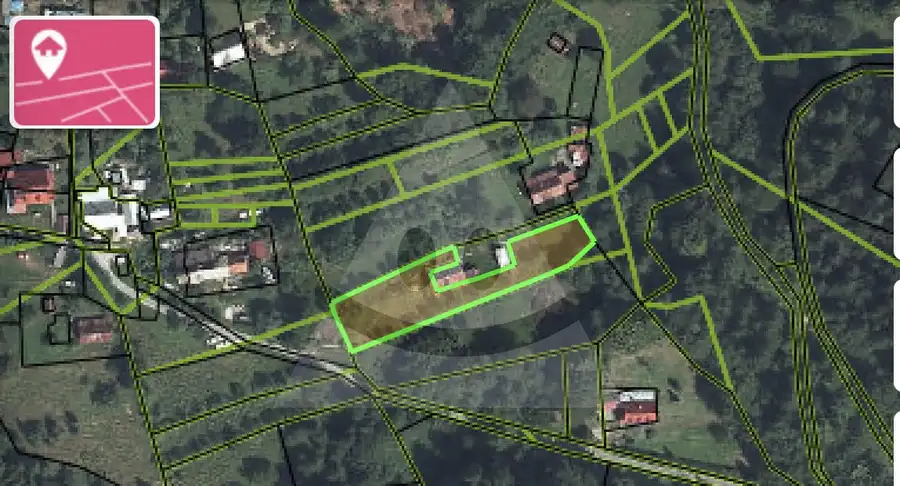
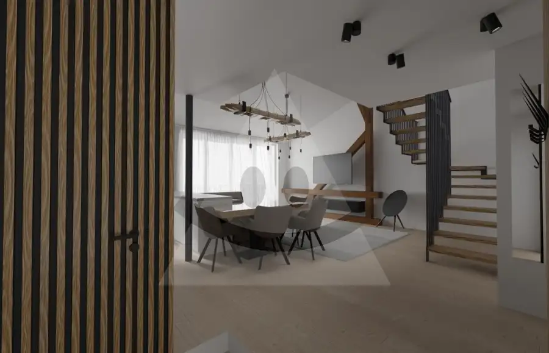
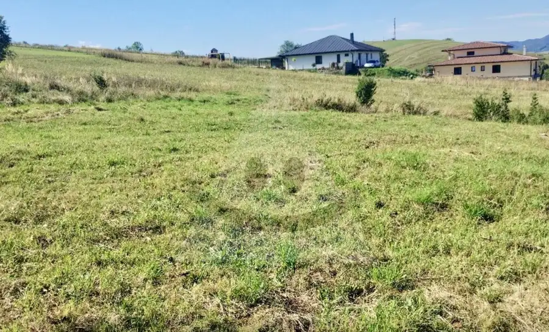

Priestranný 2-izbový byt s balkónom /61 m2/, Žilina - Vlčince III.
Žilina
- Dispozícia2-izbový
- Plocha61 m²
- Poschodie7. z 7
- StavKompletná rekonštrukcia
- VlastníctvoOsobné
O nehnuteľnosti
Reality Alpia Vám ponúkajú na predaj štýlový 2-izbový byt s balkónom /61 m2/, Žilina - Vlčince III.:- byt prešiel kompletnou rekonštrukciou, má plastové okná, kombinované podlahy (plávajúce a dlažba), murované jadro a vymenenú elektroinštaláciu v celom byte.Výhodami bytu sú zaujímavo riešená dispozícia a krásny výhľad na okolie:- vstupná chodba- samostatné WC- kúpeľňa s vaňou- kuchyňa so špajzou a výstupom na balkón- obývacia izba- priestranná spálňa, ktorú je možné predeliť na dve časti.Bytový dom prešiel rekonštrukciou vrátane zateplenia, nového výťahu, strechy a stupačiek.K bytu prislúcha aj pivnica, parkovanie je verejné.Pokojná lokalita je zárukou spokojného bývania pre nových majiteľov a strategická poloha bytu pri VŠ výbornou investičnou príležitosťou. K nehnuteľnosti nebol preložený energetický certifikát. Viac informácií Vám radi poskytneme na tel. čísle: 0948 315 862 alebo buckova.realityalpia@gmail.com.
Parametre
| Cena vrátane energií | Nie |
|---|---|
| Druh | 2 izbový byt |
| Dátum zverejnenia | 29. 9. 2026 |
| Energetický certifikát budovy | nie je |
| Podlažie | 7 |
| Počet nadzemných podlaží | 7 |
| Stav nehnuteľnosti | Kompletná rekonštrukcia |
| Typ | Predaj |
| Typ konštrukcie | Panelová |
| Vlastníctvo | Osobné |
| Vybavenie | Balkón, Pivnica, Verejné parkovanie, Výťah |
| Zariadenie | Zariadené kompletne |
| Úžitková plocha | 61 m² |
Kde to je


Mohlo by Vás zaujímať

PozemokNové4 13 000 €Pozemok na predaj /1285 m2/, Bytča - Veľké Rovné Veľké Rovné Reality Alpia Vám ponúkajú na predaj pozemok o výmere 1285 m2 v katastrálnom území obce Veľké Rovné:- nachádza sa v tichej časti obce obklopený…
BytNové10 215 000 €3-izbový tehlový mezonet s terasou v centre mesta /105 m2/ Žilina Žilina 3-izbový Reality Alpia Vám ponúkajú na predaj rozostavaný tehlový mezonet nachádzajúci sa v centre Žiliny:- priestor je určený pre pre tých, ktorí majú cit…
PozemokNové3 Cena dohodouStavebný pozemok /1494 m2/, Rajecké Teplice - Poluvsie Rajecké Teplice 1494 m² Reality Alpia Vám ponúkajú na predaj slnečný stavebný pozemok o výmere 1494 m2 vrátane prístupovej cesty:- IS siete: elektrika cca 10 metrov od…